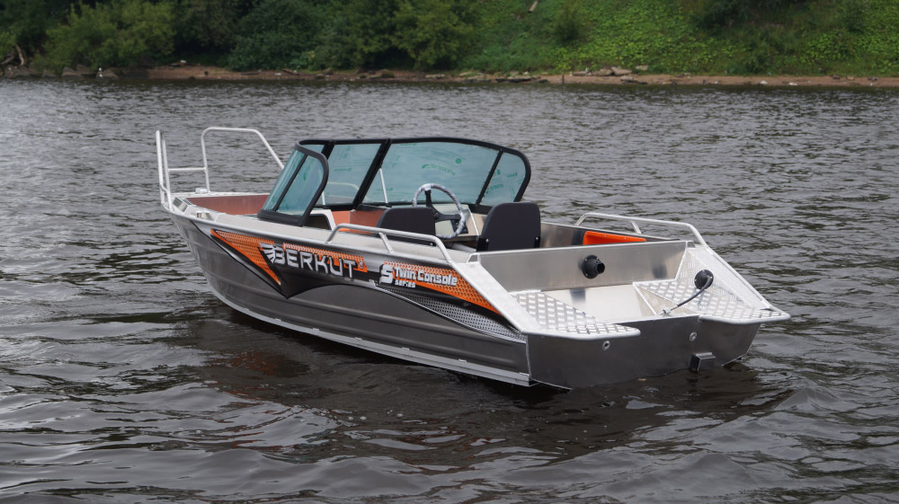

Катер Berkut S-TwinConsole (Беркут S-TwinConsole)
Катер Беркут S-TwinConsole — это новинка 2015 года в линейке катеров Беркут. Этот катер был изготовлен на базе уже известной, и полюбившейся всем рыбакам модели Беркут S.
Удобство (комфорт), управляемость, безопасность
Комфорт — при разработке катера Беркут S-TwinConsole было уделено большое внимание повышающее комфорт водители и пассажиров. Базовое оснащение является полным для рыбалки и отдыха. Корпус катера обеспечивает комфорт во время движения и стоянки.
Управляемость — хорошая плавность хода, отличные ходовые качества, высокий уровень устойчивости, а если поставить максимальный двигатель, то и прекрасные скоростные характеристики.
Безопасность — при проектировке и сборке были заложены все виды безопасности. Конструктивная (набор и сам катер сделаны из сплава алюминия с большим запасом прочности), послеаварийная безопасность (т. е. при затоплении катера водой он не утонет). А также многочисленные другие решения, повышающие безопасность плавания.
Технические характеристики катера:
| Параметр | Berkut S-TwinConsole |
|
Длина корпуса |
4.3 м |
|
Габаритная длина |
4.7 м |
|
Максимальная ширина |
1.65 м |
|
Высота борта на миделе |
0.71 м |
|
Высота надводного борта |
0.52 м |
|
Килеватость на транце |
12° |
|
Грузоподъемность |
400 кг |
|
Пассажировместимость |
4 чел |
|
Сухой вес |
230 кг |
|
Высота стандартного транца |
0,38 / 0,51 м |
|
Рекоменд. мощность мотора |
15-50 л.с. |
|
Толщина днища |
3 мм |
|
Толщина борта |
2 мм |
Стандартное оборудование:
- Сварной, запененный корпус;
- Пайолы из ламинированой фанеры с резиновой окантовкой;
- Опциональная порошковая покраска корпуса;
- Электроподготовка(Предохранители, проводка, ключ массы, клемы АКБ, площадка крепления АКБ);
- 2 сварные алюминиевые консоли ;
- Остекление (Фирменная анодированная рамка с дверцей и акриловым стеклом.);
- Высокие носовые леера;
- Площадка для крепления датчика эхолота;
- Комплект рулевого управления (Руль, редуктор, штуртрос);
- Опциональный стационарный вварной бак 35л ;
- Электрическая осушительная помпа, 500 галлонов/час.;
- Два больших бардачка в кормовой части;
- Два малых бардачка в носовой части;
- Вварной якорный ящик с алюминиевой крышкой;
- Кормовые леера;
- Вспомогательная ступенька под носовым криналином;
- Розетка прикуривателя в блоке кнопок;
- Блок кнопок (3 клавиши с прикуривателем);
- Складные, поворотные на фирменной стойке кресла капитана и пассажира;
- Комбинированный в носу, топовый ходовые огни;
- Пластиковые дренажные решетки;
- Вварная алюминиевая кормовая банка с пластиковой крышкой;
- Открытый вещевой ящик в консоли пассажира;
- Вварная алюминиевая носовая банка с пластиковой крышкой;
- Подуключины для весел;
- Кормовые криналины ;
- Пластиковые петли крепления крышек и дверей;
- Опциональные мягкие накладки на короба бортов;
Хорошая двухконсольная лодка, которая не только радует глаз, но и является хорошим помощником. Посмотрите на лодку Беркут S-TwinConsole внимательно, и вы поймете, что приобретаете хорошую качественную рыбацкую лодку — лодку в хорошей комплектации, которая будет служить вам долгие годы. Прочный и надежный Berkut S-TwinConsole будет служить вам долго (независимо от своего возраста), не требуя к себе дорогого обслуживания и ухода.
{kind=link}
{kind=link}
{kind=link}
{kind=link}
{kind=link}
{kind=link}
{kind=link}
{kind=link}
{kind=link}
{kind=link}
{kind=link}